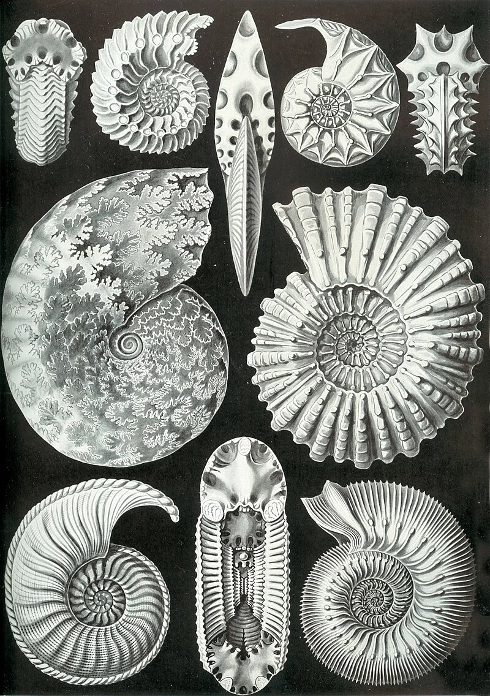
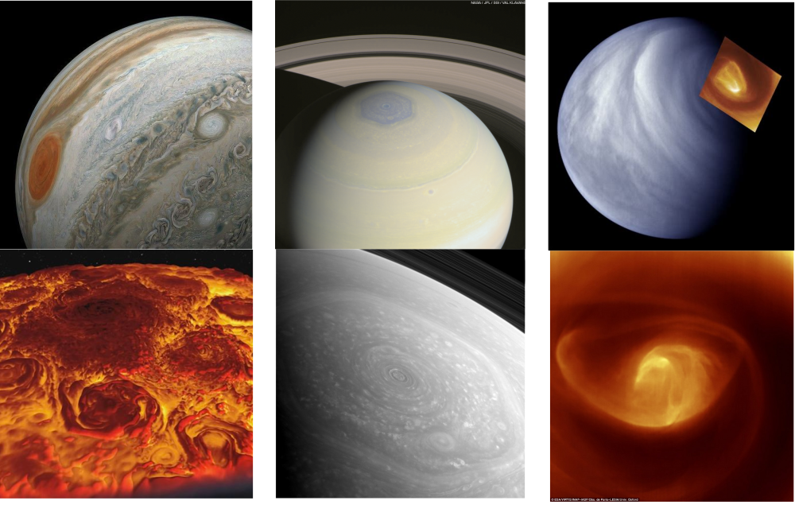
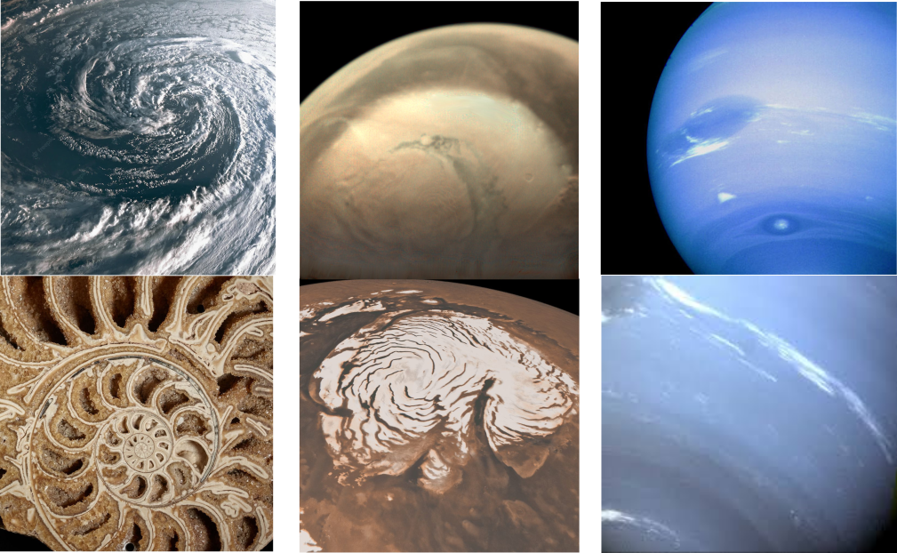
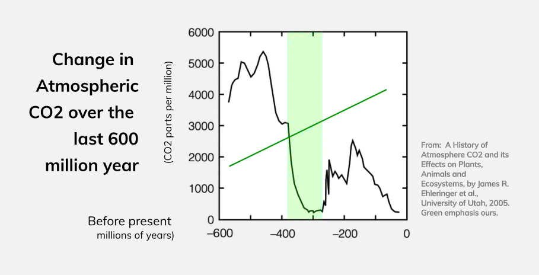
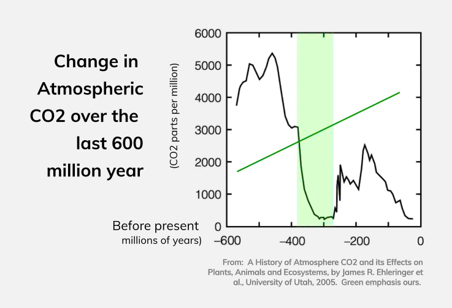

The Manner of the Mollusk
Tractatus Ayyew
Earthen Principle No. 3
Book Two | 2,307 words
Tractatus Ayyew
Earthen Principle No. 3
Book Two | 2,307 words

Three hundred million years ago, Earth’s oceans were full of swimming swirls of spiraling matter. Just as fish are everywhere in oceans today, so too were ammonites— a now extinct mollusk. Ammonites thrived in the shallow, more acidic seas of the Mesozoic period. Well known for its spiral shell, the ancient ammonite had much in common with the mollusks of today. Like clams and oysters, in life, the ammonite sieved carbon and calcium out of the water to synthesize its shell. And just like other mollusks, in death, it would inevitably sink down to the ocean floor⁷⁹. Generation after generation, the relentless rain of molluskan matter, accompanied by the carcasses and defecations of other marine creatures, steadily accumulated. As layer upon layer of fallen life pressed down upon itself, all the matter that an ammonite had gathered over the course of its life was compacted into stone. Over countless life-cycles, the lives of billions of ammonites and trillions of other marine creatures inexorably swirled countless tons of carbon and calcium into sequestration— deposits that are today limestone hills, cliffs and geological strata holding untold amounts of carbon that once circulated freely in Earth's oceans and atmosphere.
TODAY, in its fossilized form, we can hold an ammonite's ecological contribution in the palm of our hand. The carbon that this ancient mollusk sequestered millions of years ago, helped to reduce the ocean's net carbon content, and consequently its acidity— a dynamic that played a key role in making their marine ecosystem more hospitable for other creatures to thrive. The molluskan manner of managing matter⁸⁰ is an example that illustrates and illuminates our third Earthen ethic. While in our last chapter, we saw how the outward spin of energy is characteristic of Earth’s pattern, with the help of the ammonite we can now discern Earth's characteristic inward spiral of matter. As we shall see, the tendency of Earthen systems to steadily spin their principal elements into concentration, complexity and sequestration is a key dynamic in Earth's transition from barren to biosphere. As we shall also see, this same tendency is a key dynamic in the ecologial ethos and integration of the Igorot people. Inspired by the ways of the Igorot's, the Ammonite and Earth our third Earthen ethic becomes clear-- and so too the way forward for to manage our matter in a way that is truly green.
To start, let us return once again to Earth's primordial beginnings.
As we saw in Plastic's stellar story, five billion years ago, the planets of our solar systems came to be as interstellar debris swirled together. While this process may have begun long, long ago, each planet's process of coalescence has yet to cease. As asteroids continue to be attracted and meteors continue to fall, the geology, atmosphere and ocean of every planet continues to churn– enthralled by the ceaseless shine of the sun. ⁸¹

However, on each planet, the movement of matter to disperse energy is unique. Driven by the Sun's ever arriving blaze, each planet's configuration of orbit, spin, chemistry, magnetosphere, mass, momentum and more, results in vortexes unfolding with their own unique geometric character and their own levels of definition and clarity.
On Jupiter, gases readily spin together in distinctly whispy spirals-- its giant red spot being the most famous. On the its north pole, a giant Jovian storm of eight vortices forever seems to swirl around a central vortex (see figure 1, column 1)⁸².
On Saturn, hydrogen and helium swirl together in their own unique stormy vortexes. On its South pole, a Saturnian storm swirls in rounded hexagonal pattern (see figure 1, column 2).
On Venus a dipolar vortex churns the thick sulfuric atmosphere at the top of the planet (see figure 1 column 3). On Mars and Neptune, matter also spirals but with a far less distinct geometry (see figure 2).

Meanwhile, on Earth, the unique combination of carbon, oxygen and hydrogen spin with their own characteristic Earthen spiral.
As we saw in Earth's stellar story, the thermodynamic imperative of dissipation, compelled its carbon to come together into more and more complex systems. Steadily, as early systems unfurled, they gathered the abundant loose carbon from the atmosphere and oceans to unfold ever more effective energetic cycles and material forms out the readily available elements. As single cells unfolded into multi-celluar organisms, they began to absorb and manage particular types of matter. As these organisms flourished, the principal elements of their processes became concentrated within their bodies. As trees, fish, fungi and mollusks lived and died, the elements that they had concentrated into their biomass fell with them to the ground. Generation after generation, the biomass of one creatures was covered up by the fall of the next.
Although these organisms all added carbon into the air and oceans through their exhalations, with each cycle of life and death, they tended to concentrate more carbon into themselves and the earth than they let out loose. Over hundreds of millions of years, the inexorable accumulation of these ancient organisms became compacted deep underground. As more and more carbon biomass and carbonate shells fell downwards, it meant that more and more carbon and calcium was being effectively subtracted from the waters. This in turn enabled the ocean's to absorb more carbon dioxide from the atmosphere above.


With the life cycles of innumerable organisms systematically subtracting more carbon than they added, soon vast quantities were stored out of the atmosphere and into geological storage. With so much carbon sequestered into geological storage, the carbon content of Earth's oceans reduced. This enabled the oceans to absorb more atmospheric carbon— leading into a decline of green-house gas effects on the planet's surface and a reduction of ocean acidity.⁸³
And even more life was able to flourish!
A similar pattern of matter management is found in the ecological ethos and integration of the Igorot people of Northen Luzon.
As we saw in our earlier chapter, the Igorots are guided by their ayyew ecological ethos. This ethos inspired the way that the Igorots viewed the matter that passed through their hands and bodies. No matter the matter, it represented an opportunity for better and more effecting cycling. Consequently, from farming, to eating; from discarding, to defecating, the Igorots strove to spiral their matter towards enrichment. In fact, in the culture the very concept of 'waste' does not exist.⁸⁴ The closest equivalent in the Kankanue Igorot language is "logits" which can be translated as "misplaced fertilizer".
Logit were always carefully collected and placed in the lomeng— a submerged enclosure where the household's pig was kept. To this day, most Igorot homes have their own logmeng. However, these were much more than pig pens. Within them, everything from overcooked rice, grass clippings are deposited. They were also used as a toilet. There, the pigs would consume almost everything given to them. The excretions of the pigs were then collected— an even more concentrated form of the principal elements of their ecosystem which provides a rich manure to fertilize the family's gardens and fields
Over many cycles of crops, pigs and humans, the logits and lomeng lead to the steady concentration of carbon, nitrogen and phosphorus— the principal elements of their ecosystem— back into the soil. This lead to ever more fertile and biodiverse fields and healthy and well nourished Igorot communities.
Today, we have much to learn from the Igorots example of enriching ecological integration. Like them, and like the Ammonite and Earth, we too can manage our matter in a green way.
Just as Earth tended its cycles towards the inward spiral of matter, so must we intend and achieve the same with our own. Only when the intention and the result of our cycles is the net concentration of their active elements, are we following Earth's pattern. Only then is the third Earthen ethic met. Only then can our acts and enterprises be considered ecological contributions— and green.
This third earthen ethic provides a geometric means of evaluating the management of matter within our human processes.
Whether the process’s primary element is carbon or calcium, lithium or silicone, the process must embody an inward spiral in its management of matter.
First, the process must accumulate its principal elements. Second, the cycle of the process must concentrate these elements. Third, the spiral of these cycles must then lead to the net-subtraction of the element and tend, over the long-term, to its sequestration.
Cyclical, for-Earth processes that can achieve this, embody both the inward spiral of their matter and the outward spiral of their energy and fulfill the first three Earthen ethics.
In so doing, the tension between their distribution of energy and their concentration of matter, unfurls through space and time.
Like those cycles of the Igorot, Salmon, Ammonite and Earth.
In sharp contrast to the desolation that unfolded on the surfaces our fellow planets, the geometry of this Earthen double spiral has led to just the opposite:
A never ending spin towards ever more vibrant and diverse systems.
Our fourth Earthen ethic.